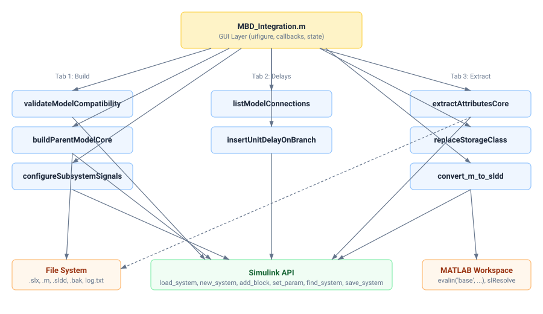
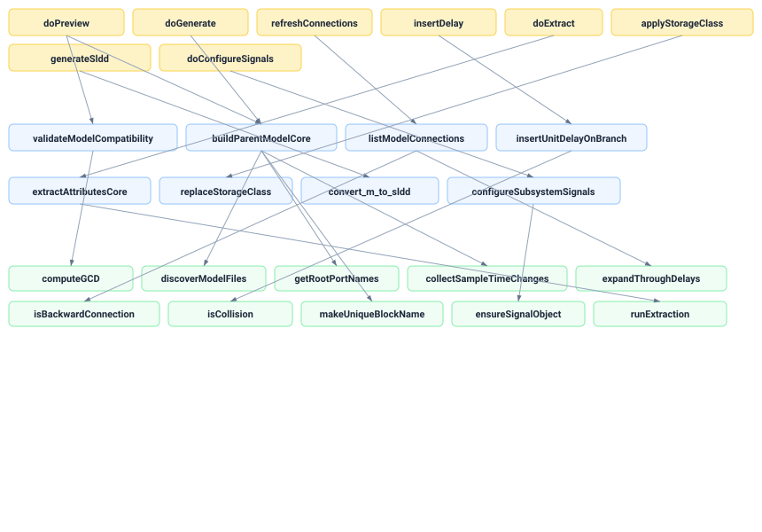
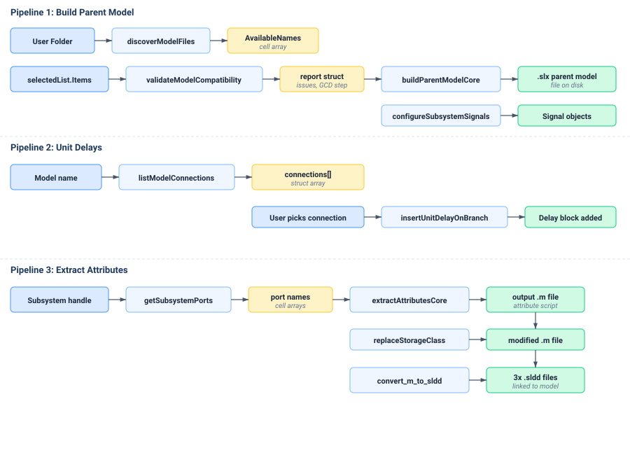
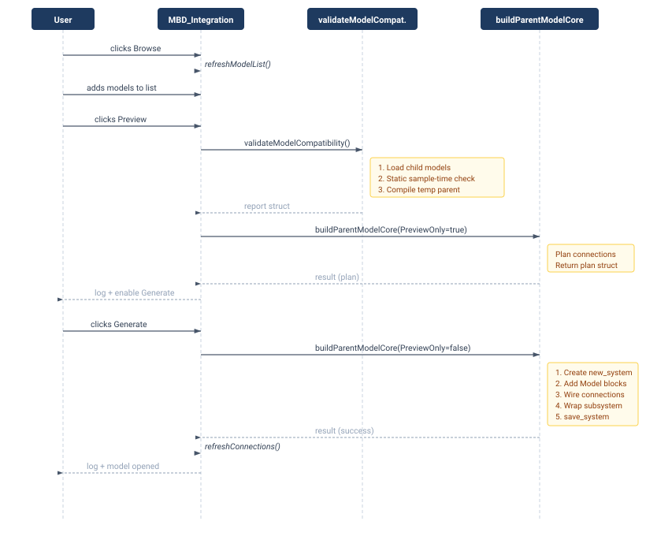

The SRM Model Integration Tool is a MATLAB application that builds a graphical user interface (a GUI — the visible window a user interacts with). The GUI lets the user perform three jobs that all relate to Simulink model integration:
Build a Parent Model — take many separate Simulink child model files (.slx or .mdl), place them inside one new parent model as Model Reference blocks, and wire all their input and output ports together automatically.
Insert Unit Delays — scan a generated model for backward-routing signal connections (feedback loops), display them in a list, and let the user insert a Unit Delay block on any selected connection to break the algebraic loop.
Extract Attributes — read port names from a selected Simulink subsystem, search a folder of .m files for variable assignments that match those port names, write the matches to an output .m file, optionally update StorageClass values, and optionally convert the output into Simulink Data Dictionary (.sldd) files.
What starts the application
The user types MBD_Integration in the MATLAB Command Window. This calls the function MBD_Integration() defined in MBD_Integration.m. The function creates a uifigure window and populates it with tabs, buttons, text fields, and other controls. No arguments are required.
What the final outputs are
A new Simulink model file (.slx) containing Model Reference blocks wired together.
A log.txt file recording the session console output.
A generated .m data script containing extracted variable attribute assignments.
Up to three .sldd Simulink Data Dictionary files per processed model.
Backup files (.bak) created before any file is overwritten.
Source: MBD_Integration.m → function MBD_Integration()
2. Quick Understanding
This section explains the application in less than five minutes.
The user runs MBD_Integration. A window opens with three tabs.
In Tab 1, the user picks a folder containing Simulink model files. The tool scans the folder, lists every model it finds, and lets the user pick which models to include and in what order.
The user clicks Preview. The tool loads every chosen model, checks if their solver settings and sample times are compatible, and shows a report listing every planned connection.
If Preview passes, the user clicks Generate. The tool creates a new Simulink model, places a Model Reference block for each child model, and connects matching ports using either virtual From/Goto tags or physical signal lines. It can also automatically insert Unit Delay blocks on feedback paths.
In Tab 2, the user can inspect the generated model for remaining backward connections and manually insert Unit Delay blocks on selected connections.
In Tab 3, the user selects a subsystem in Simulink, presses Refresh, picks a source folder of .m files, and clicks Extract. The tool scans those files for variable definitions matching port names and writes an output script. The user can then update StorageClass values and generate .sldd data dictionaries linked to the model.
All actions are logged in a text area inside each tab and simultaneously written to log.txt via the MATLAB diary command.
3. Application Entry Point
Starting file
MBD_Integration.m — this file defines a single function named MBD_Integration(). It takes no input arguments and produces no output arguments.
Type
Function (not a script, not a class).
What happens first
The following initialization steps execute in order:
Order
Action
Code Reference
1
Determine the folder containing MBD_Integration.m itself and add it to the MATLAB path with addpath.
Create a shared state struct with fields for model lists, connections, last generated model name, and other shared data.
state = struct(...);
7
Create the main uifigure window. Build the grid layout, header, three tabs, and all UI controls inside them.
app = uifigure(...);
8
If isReturningUser is false, call showQuickTutorial(app) to display a multi-step onboarding dialog.
showQuickTutorial(app);
Source: MBD_Integration.m → MBD_Integration()
4. Complete Execution Flow
After initialization, the application enters an idle state. All further processing is driven by user actions (button clicks, text changes, checkbox toggles). The three major flows are described below.
Tab 1 — Build Parent Model Flow
Step 1 — Browse Models Folder▶
The user clicks Browse... next to the Source Folder field. Callback: browseModelsFolder.
Opens uigetdir to let the user pick a folder.
Sets modelsFolderEdit.Value to the chosen path.
If the save-folder field is empty, it is auto-filled with the same path.
refreshModelList() calls the local helper discoverModelFiles(folder) which uses dir(fullfile(folder, '**', '*.slx')) and the same for *.mdl. It filters out paths containing /slprj, /., or /backup. It then deduplicates by lowercase model name using a containers.Map, keeping only the first occurrence. The unique names and labels (with relative subfolder info) are stored into state.AvailableNames and state.AvailableLabels. These populate the left-hand uilistbox.
The user selects one or more items in the Available Models list and clicks Add >, Add All >>, or Get Excel.
addModel / addAllModels: moves selected labels to the right-hand selectedList listbox. Skips items already present. Calls invalidatePreview().
importFromExcel: opens uigetfile for .xlsx/.xlsm/.xls/.csv. Reads Column A via readcell. Strips empty/missing values. Deduplicates within the sheet. Matches each name (case-insensitive) against state.AvailableNames. Missing models trigger a confirmation dialog. Valid models replace the selected list.
Main application file. Creates the GUI window, all tabs, all controls, and defines every callback function as nested functions inside MBD_Integration().
Type
Function (no output arguments, no required input arguments).
Formats the preview/generate result struct into human-readable log lines.
renderExtractSummary(result)
Formats the extraction result into log lines.
centeredPosition(width, height)
Calculates a window position centered on screen.
Source: MBD_Integration.m
File: buildParentModelCore.m
Purpose
Core engine that creates a new Simulink model, adds Model Reference blocks for each child model, plans and executes signal connections, optionally wraps everything in a subsystem, and saves the result.
Type
Function.
Inputs
modelsFolder (char), selectedModels (cell of char), targetModelName (char), options (struct).
Outputs
result (struct with fields: Success, Cancelled, PreviewOnly, TargetModel, OutputFile, Models, InternalConnections, RootInputs, RootOutputs, ConfigParamNames, ConfigParamValues, Warnings, Notes, Counts, SubsystemName, BackupFile).
Major Processing Stages
Input Validation — Checks folder existence, strips file extensions from model names, validates output name and folder.
Discovery — Calls the local discoverModelFiles to build a name→path map. Matches each selected model against this map.
Load Models — Loads each child model via load_system. Optionally sets ModelReferenceNumInstancesAllowed to 'Multi'.
Force Inherited Sample Times — If options.ForceInheritedSampleTimes is true, calls collectSampleTimeChanges(modelName) on each child model to find Inport/Outport/UnitDelay blocks whose SampleTime is not '-1', then sets each to '-1' and saves the child model.
Configuration Check — Reads specified configuration parameters (default: UseDivisionForNetSlopeComputation) from each model, logs warnings if values differ.
Read Interfaces — Calls getRootPortNames on each model to get ordered lists of input and output port names.
Plan Connections — For each source model output, scans all other models' inputs for a case-insensitive name match. Marks matched inputs as connected. Self-matching ports on the same model are noted but skipped. Unmatched inputs become Root Inputs. All outputs become Root Outputs (with disambiguation if names collide).
Preview Exit — If options.PreviewOnly is true, returns the plan without creating any model.
Build — Creates a new model with new_system. Sets solver to FixedStepDiscrete, SingleTasking, AutoInsertRateTranBlk='off'. Computes parent FixedStep as the GCD of all child step sizes. Sets 15 diagnostic parameters to 'none'.
Block Placement — Two modes:
From/Goto: Disambiguates tag names, calculates uniform block heights, places Model Reference blocks, Goto blocks after outputs, and From blocks before inputs. Places UnitDelay blocks on feedback paths if AutoDelayFeedback is on. Places root Inports with Goto blocks and root Outports with From blocks.
Direct Lines: Places Model Reference blocks, draws direct lines via add_line. Inserts UnitDelay blocks on feedback paths.
Subsystem Wrap — If WrapInSubsystem is true, creates a parent subsystem, moves all contents inside, and wires root Inports/Outports to the subsystem boundary.
Final Save — Updates the diagram, saves the model, relocates stray .slxc cache files.
Key Local Functions
Function
Purpose
collectSampleTimeChanges(sys)
Finds Inport/Outport/UnitDelay blocks in sys whose SampleTime is not '-1'.
readConfigParamSafe(modelName, paramName)
Attempts to read a config parameter via multiple fallback strategies.
discoverModelFiles(modelsFolder)
Recursively finds models, deduplicates by lowercase name.
getRootPortNames(modelName)
Finds root Inport/Outport blocks, returns sorted port names.
normKey(name, caseInsensitive)
Returns lower(name) or name depending on flag.
makeUniqueBlockName(sys, name)
Appends numeric suffix until the block path is unique.
paletteColor(index)
Returns a color string from a 24-row RGB palette.
safeName(s)
Converts a string to a valid MATLAB identifier.
fillDefaults(options, defaults)
Sets missing fields to default values.
Source: buildParentModelCore.m
File: validateModelCompatibility.m
Purpose
Checks whether the selected child models are compatible for integration. Performs static sample-time analysis and a temporary Simulink compilation test.
result (struct with Subsystem, PortChoice, FilesFound, FilesRead, FilesSkipped, UniqueMatches, OutputFile, Tags, Warnings, Cancelled).
Processing
Gets Inport/Outport names from the subsystem using getImmediatePortNames.
Selects Inports, Outports, or Both based on options.PortChoice.
Builds a dual-tag lookup map: both the raw port name and its matlab.lang.makeValidName version map to the original raw name.
Recursively finds all .m files in searchFolder (excludes the output file itself).
Reads each file line by line. Skips blank lines and comment lines. Checks for a dot character (indicating Tag.Property = value). Extracts the part before the first dot as the tag. Looks up the tag in the lookup map. Skips lines that are Simulink.Signal instantiations. Stores unique records in a containers.Map.
Writes the output file with optional metadata header, grouped into Inports and Outports sections. For each port tag, writes cleanVar = Simulink.Signal; followed by all matched attribute lines.
Source: extractAttributesCore.m
File: convert_m_to_sldd.m
Purpose
Finds *_data.m scripts, runs them in the base workspace, classifies the resulting variables, and creates three .sldd Simulink Data Dictionary files per model.
Type
Function (uses inputParser for name-value arguments).
Stage 1: Captures base workspace state. Runs the _data.m script via evalin('base', sprintf('run(''%s'');', mfPath)). Identifies new variables.
Stage 2: Loads the model. Scans all signal lines for those with MustResolveToSignalObject='on'. Finds which M-file variables are referenced. Runs slResolve on each candidate; if any fail, the model is skipped.
Stage 3: Classifies variables:
IO names = root Inport/Outport block names.
Simulink.Signal objects not in IO → Local signals.
Non-signal variables starting with m_ → Parameters with Const storage.
Other non-signal variables → Parameters with Define storage.
Stage 4 (skipped if checkOnly): Creates/resets three .sldd files:
Note: In the provided source code, convert_m_to_sldd and replaceStorageClass are defined within the same file as extractAttributesCore.m, appended after the main function and its local helpers.
File: replaceStorageClass.m
Purpose
Uses regex to find and replace .StorageClass = '...' assignments in *_data.m files.
results (struct array with FilePath, Changed, ReplacementCount, Warnings, BackupPath).
Processing
If no file path is given, scans pwd for *_data.m files.
Reads entire file content via fileread.
Searches using regex pattern: \.StorageClass\s*=\s*'(?:Auto|ExportedGlobal|ImportedExtern)'.
Creates a .bak backup. Uses regexprep to replace all matches. Writes the modified content back with fwrite.
Also checks for declared Simulink.Signal/Simulink.Parameter objects that have no corresponding StorageClass assignment and warns about them.
Source: replaceStorageClass.m (embedded in the same file as extractAttributesCore.m in the provided code)
File: listModelConnections.m
Purpose
Scans a loaded Simulink model to find all model-to-model signal connections. Returns only backward connections and self-loops.
Type
Function.
Inputs
systemName (char).
Outputs
connections (struct array), stats (struct with counts).
Processing
Finds all blocks via find_system. Identifies Model Reference blocks (those with BlockType='Model' or having a non-empty ModelName parameter).
Collects all Goto, From, and UnitDelay block paths and port handles.
Maps all Model Reference input port handles to their owning model index.
For each model output port, traces the signal line. Uses expandThroughDelays to follow chains of UnitDelay blocks (up to depth 8). If the destination port is a model input, records a direct-line connection. If the destination is a Goto block input, records a pending Goto entry.
Traces From block output lines similarly, recording pending From entries.
Pairs pending Gotos and Froms by matching tag names. If exactly one Goto matches, creates a 'fromgoto' connection.
The isBackwardConnection function checks block positions: if the source center is to the right of the destination center (horizontal) or below (vertical), it is backward. Self-loops always return true.
Source: listModelConnections.m
File: insertUnitDelayOnBranch.m
Purpose
Inserts a single UnitDelay block on a specific connection between a source output port and a destination input port.
result (struct with NewBlockPath, System, Message).
Processing
Verifies the model is loaded and both blocks exist.
Gets the source output line handle. Collects all destination port handles on that line (including branch children).
Calculates the delay block position to the left of the destination port. Checks for overlaps with all existing blocks using isCollision (bounding box intersection). Shifts down by 25 pixels up to 10 times if collisions are detected.
Deletes the existing line(s). Adds the UnitDelay block with SampleTime='-1'. Connects source → delay → destination. Reconnects any other destinations that shared the original line.
Source: insertUnitDelayOnBranch.m
File: configureSubsystemSignals.m
Purpose
Configures signal names, propagation, and resolution on the ports of a selected Subsystem block.
Type
Function.
Inputs
options (struct with ProcessInports, ProcessOutports, ShowPropagation, MustResolve).
Gets the active model name from bdroot and the selected block from gcb. Verifies it is a SubSystem.
Inports: For each internal Inport block, finds the corresponding external port handle on the subsystem boundary. Gets the external signal line's source port handle. Calls ensureSignalObject to create a Simulink.Signal in the Data Dictionary or Model Workspace if one does not exist. Sets the signal name and MustResolveToSignalObject on the source port. Enables ShowPropagatedSignals on the internal Inport's output line.
Outports: Same logic but follows the internal Outport's input line back to its source port, configures that source, and enables propagation on the external Outport's output line.
Persists changes to the Data Dictionary if attached. Updates and saves the model.
Source: configureSubsystemSignals.m
6. Function Reference
This section provides a consolidated reference for all functions across all provided source files. Only the most important functions are listed below. For nested callbacks inside MBD_Integration.m, see the File-by-File section above.
Function
File
Inputs
Outputs
Called By
Calls
MBD_Integration()
MBD_Integration.m
None
None
User (command window)
All nested callbacks, showQuickTutorial
buildParentModelCore()
buildParentModelCore.m
folder, models, name, options
result struct
doPreview, doGenerate
discoverModelFiles, getRootPortNames, collectSampleTimeChanges, readConfigParamSafe, Simulink API
validateModelCompatibility()
validateModelCompatibility.m
folder, models, progressFcn, options
report struct
doPreview
computeGCD, makeIssue, Simulink API
extractAttributesCore()
extractAttributesCore.m
handle, folder, file, options
result struct
doExtract
getImmediatePortNames, runExtraction
convert_m_to_sldd()
(inside extractAttributesCore.m)
Name-value pairs
None
previewSldd, generateSldd
createOrResetDict, upsertEntry, clearMVarsFromBase, Simulink API
User selects folder
↓
discoverModelFiles() → state.AvailableNames, state.AvailableLabels
↓
User arranges models → selectedList.Items (ordered model names)
↓
validateModelCompatibility() → report struct (issues, recommended step)
↓
buildParentModelCore() [PreviewOnly=true] → result struct (connections plan)
↓
buildParentModelCore() [PreviewOnly=false] → new .slx file on disk
↓
result.TargetModel → connModelEdit.Value (Tab 2)
result.TargetModel → destEdit.Value (Tab 3)
Tab 2 — Unit Delays
User provides model name
↓
listModelConnections() → connections struct array, stats struct
↓
User selects connection
↓
insertUnitDelayOnBranch() → UnitDelay block added to diagram, model saved
Tab 3 — Extract Attributes
User selects Subsystem in Simulink
↓
getSubsystemPorts() → port names (tags)
↓
extractAttributesCore() → output .m file on disk
↓
replaceStorageClass() → modified .m file
↓
convert_m_to_sldd() → three .sldd files, linked to model
9. Control Flow
Key Conditional Branches
Location
Condition
Effect
buildParentModelCore
if result.PreviewOnly
Returns the plan struct without creating any model. Otherwise proceeds to build.
buildParentModelCore
if strcmp(connectionMethod, 'fromgoto')
Selects the From/Goto routing path. The else branch selects Direct Lines routing.
buildParentModelCore
if autoDelayFeedback && isFeedbackLoop
Inserts a UnitDelay block between the From block and the model input.
buildParentModelCore
if options.ForceInheritedSampleTimes
Scans and resets all Inport/Outport/UnitDelay SampleTimes to '-1'.
buildParentModelCore
if wrapInSub
Creates a parent subsystem, wires root ports to it.
listModelConnections
isBackwardConnection(srcPath, dstPath)
Returns true for self-loops (same block), or when the source block center is to the right of (or below) the destination center.
insertUnitDelayOnBranch
while isCollision(...) && shiftAttempts < 10
Shifts the delay block position down by 25 pixels per attempt.
extractAttributesCore
switch options.PortChoice
Selects Inports only, Outports only, or Both as search tags.
convert_m_to_sldd
if opt.checkOnly
Prints targets but does not create SLDD files.
MBD_Integration
if ~isReturningUser
Shows the first-time tutorial dialogs.
Key Loops
Location
Loop
Purpose
buildParentModelCore
for sourceIndex = 1:numModels (nested for destinationIndex)
Compares every source output to every other model's inputs for name matching.
listModelConnections
for sourceIndex = 1:numel(modelBlocks)
Traces every model output line to find direct and From/Goto connections.
extractAttributesCore → runExtraction
for fileIdx = 1:numel(matlabFiles) (inner while true on fgetl)
Reads every .m file line by line.
insertUnitDelayOnBranch
while isCollision(...) && shiftAttempts < 10
Shifts delay block position to avoid overlap.
10. Algorithms and Calculations
GCD Step-Size Calculation
Used in both validateModelCompatibility.m and buildParentModelCore.m.
Purpose: Find the largest step size that is an integer divisor of every child model's FixedStep, so the parent solver can accommodate all rates.
% From validateModelCompatibility.m → computeGCD():
scale = 1e6;
g = gcd(round(a * scale), round(b * scale)) / scale;
% From buildParentModelCore.m (inline):
baseStep = detectedRates(1);
for r = 2:numel(detectedRates)
baseStep = gcd(round(baseStep*1e6), round(detectedRates(r)*1e6)) / 1e6;
end
Both implementations scale floating-point values to integers (multiply by 106), call MATLAB's built-in gcd, then scale back.
Each character occupies approximately 8.5 pixels, plus 30 pixels of padding.
Backward Connection Detection
% From listModelConnections.m → isBackwardConnection():
dx = srcCx - dstCx; % positive means source is to the right
dy = srcCy - dstCy; % positive means source is below
tol = 5;
if abs(dy) >= abs(dx)
tf = dy > tol; % vertical-dominant: bottom→top
else
tf = dx > tol; % horizontal-dominant: right→left
end
Self-loops (same source and destination block) always return true.
Collision Detection for Block Placement
% From insertUnitDelayOnBranch.m → isCollision():
function tf = isCollision(rect, allRects)
margin = 2;
lo = [rect(1) - margin, rect(2) - margin];
hi = [rect(3) + margin, rect(4) + margin];
for r = 1:size(allRects, 1)
o = allRects(r, :);
if lo(1) < o(3) && o(1) < hi(1) && lo(2) < o(4) && o(2) < hi(2)
tf = true; return;
end
end
tf = false;
end
Standard axis-aligned bounding box (AABB) overlap test with a 2-pixel margin.
No other MATLAB toolboxes are explicitly required by the provided code. The functions used (uifigure, uigridlayout, uitabgroup, uiprogressdlg, uiconfirm, etc.) are part of MATLAB's App Designer framework, available in base MATLAB R2020a+.
External Functions Not Provided
Note: Some external functions are referenced in the code but not provided in the source distribution. These include convert_m_to_sldd and .sldd. Their implementations are assumed to be available on the MATLAB path.
Writes a probe file MBD_Integration_probe.tmp, then deletes it.
15. Error Handling
Error Identifiers Used
ID
File
Condition
buildParentModelCore:InvalidFolder
buildParentModelCore.m
Models folder does not exist.
buildParentModelCore:NoModelsSelected
buildParentModelCore.m
No models passed to the function.
buildParentModelCore:NameClash
buildParentModelCore.m
Output model name matches a child model name.
buildParentModelCore:FileExists
buildParentModelCore.m
Target file exists and Overwrite is false.
buildParentModelCore:ModelNotFound
buildParentModelCore.m
A requested model is not in the discovered file map.
extractAttributesCore:InvalidHandle
extractAttributesCore.m
Subsystem handle is invalid.
extractAttributesCore:NoPorts
extractAttributesCore.m
No ports found matching the PortChoice.
insertUnitDelayOnBranch:ModelNotLoaded
insertUnitDelayOnBranch.m
Model not loaded in Simulink.
insertUnitDelayOnBranch:NotConnected
insertUnitDelayOnBranch.m
Source and destination are not connected.
listModelConnections:ModelNotLoaded
listModelConnections.m
Model not loaded.
configureSubsystemSignals:NoOpenModel
configureSubsystemSignals.m
No model is open.
configureSubsystemSignals:NotSubsystem
configureSubsystemSignals.m
Selected block is not a SubSystem.
try/catch Patterns
Throughout MBD_Integration.m, every callback that calls a core engine wraps the call in try/catch. On catch, the error message is formatted via errorDetails(err) — which strips HTML anchor tags and chains cause messages — and displayed to the user via notify(app, errText, title, 'error') (which calls uialert). The error is also logged to the tab's text area and to the command window (and therefore to log.txt).
The buildParentModelCore function has a top-level try/catch around the entire build section. On failure, it closes the partially created model, restores the backup file if one was created, closes models it loaded, and rethrows the error.
16. Configuration
Hardcoded Configuration Values
Value
Location
Purpose
spacingPoints() = 100
MBD_Integration.m
Base spacing value in pixels for block layout.
FromModelGap = 100
MBD_Integration.m → spacingGaps()
Gap between a From block and its target model block.
ModelGotoGap = 100
MBD_Integration.m → spacingGaps()
Gap between a model block and its output Goto block.
FromToDelayGap = 40
MBD_Integration.m → spacingGaps()
Gap between a From block and a UnitDelay block.
ModelToModelGap = 400
MBD_Integration.m → spacingGaps()
Total horizontal gap between consecutive model blocks.
modelWidth = 260
buildParentModelCore.m
Width of each Model Reference block in pixels.
uniformModelH = max(140, ...)
buildParentModelCore.m
Height of each Model Reference block.
modelBaseY = 200
buildParentModelCore.m
Starting Y-coordinate for model blocks.
24-entry color palette
buildParentModelCore.m → paletteColor()
Pastel background colors for blocks.
globalInportColor = '[0.65,0.90,0.65]'
buildParentModelCore.m
Background color for root Inport blocks.
globalOutportColor = '[0.95,0.70,0.45]'
buildParentModelCore.m
Background color for root Outport blocks.
FixedStep fallback = '0.001'
buildParentModelCore.m
Used when no child models have detectable step sizes.
Log buffer max = 500 lines
MBD_Integration.m → logTo / logMany
Text areas are trimmed to the last 500 lines.
Delay expansion depth limit = 8
listModelConnections.m → expandThroughDelays
Maximum recursive traversal depth through chained UnitDelay blocks.
Collision shift limit = 10 attempts
insertUnitDelayOnBranch.m
Maximum downward shifts when placing a delay block.
17. User Interface
The application creates a single uifigure window titled 'SRM MODEL INTEGRATION TOOL', sized 1020 × 700 pixels, centered on screen.
Top-Level Layout
A uigridlayout with 3 rows and 2 columns:
Row 1: Header (logo image + title label in left column, Clear All button in right column).
Row 2: uitabgroup with three tabs (left column only).
StorageClass Editor:replaceStorageClass — regex-based text replacement.
All engine functions are called by the GUI layer. No engine function calls another engine function.

Architecture diagram — generated from verified source code relationships.
20–23. Diagrams

Call graph — showing verified function-to-function calls from the GUI layer to engine functions.

Data flow diagram — showing verified data movement through the three processing pipelines.

Sequence diagram — showing the verified execution order for the Build Parent Model workflow (Preview + Generate).
24. Screenshots
📷
Screenshot Required: Application Startup Window
Insert a screenshot of the main window after running MBD_Integration. The source code creates a uifigure titled 'SRM MODEL INTEGRATION TOOL' sized 1020×700.
Source: MBD_Integration.m → app = uifigure(...)
📷
Screenshot Required: Tab 1 — Build Parent Model
Insert a screenshot showing Tab 1 with models loaded in the Available and Selected lists, and the Preview log populated.
Source: MBD_Integration.m → tab1 grid layout
📷
Screenshot Required: Tab 2 — Unit Delays
Insert a screenshot showing Tab 2 with the connections table populated after clicking Refresh list.
Source: MBD_Integration.m → tab3 (variable named tab3 for the Unit Delays tab)
📷
Screenshot Required: Tab 3 — Extract Attributes
Insert a screenshot showing Tab 3 with a subsystem selected and tags populated in the listbox.
Source: MBD_Integration.m → tab2 (variable named tab2 for the Extract Attributes tab)
📷
Screenshot Required: First-Time Tutorial Dialog
Insert a screenshot of the uiconfirm dialog displayed on first launch. The source code creates 7 steps in showQuickTutorial().
Source: MBD_Integration.m → showQuickTutorial()
📷
Screenshot Required: Generated Parent Model in Simulink
Insert a screenshot of a generated parent model opened in Simulink, showing Model Reference blocks connected via From/Goto tags.
Note on tab variable names: In the source code, the Unit Delays tab uses the variable tab3 and the Extract Attributes tab uses tab2. This naming does not match the visual tab order (Unit Delays is the second visible tab, Extract Attributes is the third). This is a naming discrepancy in the source code.
25. How This Application Works — Simple Explanation
Imagine you have 20 small Simulink models, and you need to connect them all together into one big model. Doing this by hand would take a long time — you would need to drag each model into a new diagram, figure out which outputs go to which inputs by matching their names, draw all the wires, and deal with timing problems.
This tool does all of that for you. Here is what happens:
You point the tool at a folder. The tool looks inside that folder (and all its subfolders) for Simulink model files. It makes a list of everything it finds.
You pick which models to include and put them in order. You can do this by clicking in the list, or by uploading an Excel file that already has the list in Column A.
You click Preview. The tool opens each model, reads its input and output port names, and checks if their timing settings are compatible. It builds a plan showing which outputs connect to which inputs (by matching names). It also finds connections that go "backward" — where a later model feeds back into an earlier one.
You click Generate. The tool creates a brand-new Simulink model. For each of your child models, it places a special block called a Model Reference that points to the original file. Then it connects them:
If you chose "From/Goto blocks", it uses invisible wireless-style connections. Each output gets a Goto tag, and each matching input gets a From tag with the same name.
If you chose "Direct lines", it draws physical wires.
For backward connections, it can automatically insert a Unit Delay block — a one-step time buffer that prevents the solver from getting stuck in a loop.
You can fix remaining loops. On the second tab, the tool shows you a list of all backward connections in the model. You can pick one and click a button to insert a Unit Delay block on it.
You can extract variable settings. On the third tab, you click on a subsystem in your model, and the tool reads its port names. Then it searches through a folder of MATLAB code files looking for lines that set properties of variables with those names. It collects all the matches and writes them into a new file. You can also convert that file into a Simulink Data Dictionary, which is a special file Simulink uses to store variable definitions permanently.
The tool saves a log of everything it does to a file called log.txt. Before overwriting any file, it makes a backup copy with a .bak extension.
26. Technical Reference
Source File List
#
File
Type
Lines of Code (approx.)
1
MBD_Integration.m
Function (with nested functions and local helpers)
~1300
2
buildParentModelCore.m
Function (with local helpers)
~700
3
validateModelCompatibility.m
Function (with local helpers)
~200
4
extractAttributesCore.m
Function (with local helpers); also contains convert_m_to_sldd and replaceStorageClass
~700 (combined)
5
listModelConnections.m
Function (with local helpers)
~350
6
insertUnitDelayOnBranch.m
Function (with local helpers)
~180
7
configureSubsystemSignals.m
Function (with local helpers)
~250
External Resource Dependencies
Resource
Type
Required By
Simulink (base toolbox)
MATLAB Toolbox
All engine files
logo.png
Image file (optional)
MBD_Integration.m header
Information Not Available in Source Code
The file logo.png is referenced but not provided. Its content is unknown.
The exact appearance of the GUI cannot be confirmed without running the code. All UI layout descriptions are based on the uigridlayout row/column assignments in the source code.
No MATLAB classes are defined in the provided source code. Section 7 (Class Architecture) is therefore not applicable.
No hardware or communication protocols are used by the provided source code. Section 18 (Hardware/Communication) is therefore not applicable.
The naming of tab variables is inconsistent with the visual tab order: tab1 = "Build Parent Model", tab3 = "Unit Delays" (second visual tab), tab2 = "Extract Attributes" (third visual tab). The source code does not explain this discrepancy.
The variable caseInsensitive in MBD_Integration.m is set to true and never changed by any UI control. The commented-out checkbox chkCase2 suggests this was once user-configurable.
Troubleshooting Reference
Error / Symptom
Cause (from source code)
Solution
"That models folder does not exist."
onModelsFolderChanged checks isfolder(candidate) and sets status if false.
Enter or browse to a valid directory path.
"Referenced model 'X' was not found."
buildParentModelCore could not find the model name in the discovered file map.
Verify the model file exists in the source folder. Check for naming mismatches.
"The generated model name must differ from the referenced-model names."
buildParentModelCore compares targetModel against selectedModels (case-insensitive).
Choose a different output model name.
"No Simulink block is selected."
getSubsystemPorts receives an empty or invalid handle from gcbh.
Click a Subsystem block in an open Simulink model before pressing Refresh.
"The selected block is not a subsystem."
getSubsystemPorts checks get_param(handle, 'BlockType') against 'SubSystem'.
Select a Subsystem block specifically, not a Gain, Constant, or other block type.
Preview passes but Generate fails with sample-time errors
Preview uses a read-only check. Generate creates the actual model, which may expose issues the read-only check cannot detect.
Enable the Reset All Sample Time To -1 checkbox and re-run Preview + Generate.
"Model 'X' is not open in Simulink."
refreshConnections checks bdIsLoaded(modelName).
Open the model in Simulink first, then click Refresh list.
StorageClass update reports no changes
replaceStorageClass regex did not find any .StorageClass = '...' patterns in the file.
Verify the file contains .StorageClass assignments. The regex only matches Auto, ExportedGlobal, or ImportedExtern as existing values.